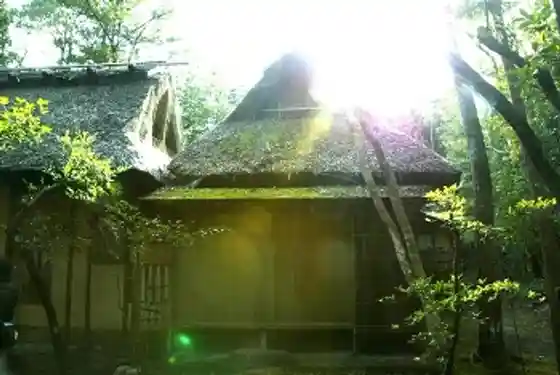
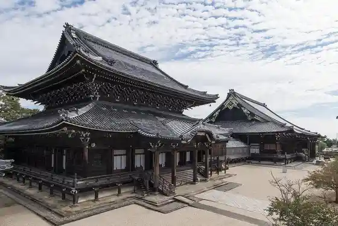
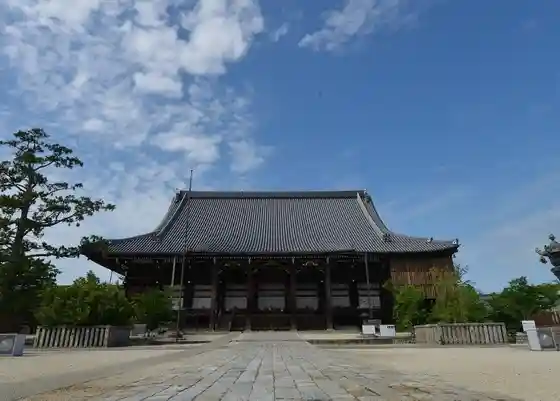
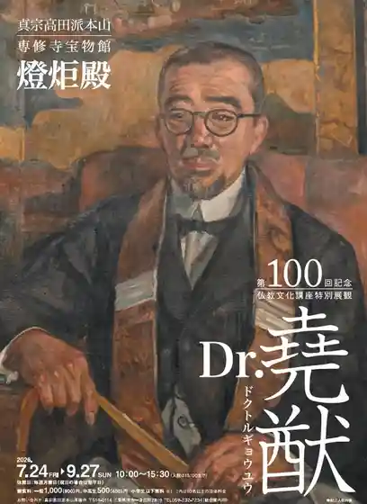

Takada Honzan Senshu Tera Garden (Kumo Yu Sono)
Tsu, Mie · 059-232-4171 · Official / source link

Takada Honzan Senshu Tera
Tsu, Mie · 059-232-4171 · Official / source link

Takada Honzan Senshu Tera Mikage Do
Tsu, Mie · 059-232-7234 · Official / source link

Takada Honzan Senshu Tera Takaramono Kan to Kyo Dono
Tsu, Mie · 059-232-7234 · Official / source link

Ochiai no Sato
Tsu, Mie · 059-265-2019 · Official / source link
Tokotome no Sato Kazushi
Tsu, Mie · 059-295-0111 · Official / source link
Yazu no Osugi
Tsu, Mie · 059-293-3000 · Official / source link
Takada Honzan Senshu Tera O Byo Haido Kyu Karamon
Tsu, Mie · 059-232-7234 · Official / source link
Takada Honzan Senshu Terayama Mon
Tsu, Mie · 059-232-7234 · Official / source link
Takada Honzan Senshu Tera Nyorai Do
Tsu, Mie · 059-232-7234 · Official / source link
Takada Honzan Senshu Tera Karamon
Tsu, Mie · 059-236-5701 · Official / source link
Gotemba Beach
Tsu, Mie · 059-246-9020 · Official / source link
Akatsuka Buruberii Garden (Akatsuka Botanical Garden)
Tsu, Mie · 090-6384-1186 · Official / source link
Akatsuka FFC Pabirion (Akatsuka Botanical Garden)
Tsu, Mie · 059-230-2121 · Official / source link
Reddohiru Hiisa Forest (Akatsuka Botanical Garden)
Tsu, Mie · 059-230-7789 · Official / source link
Fukushi to Kankyo Wo Yugo Shita Flower Garden (Kazahaya Village)
Tsu, Mie · 050-1721-0847 · Official / source link
Misugi Town Mitsumata Gunsei Chi
Tsu, Mie · 059-272-8080 · Official / source link
San Taki Cherry Blossoms
Tsu, Mie · Official / source link
Geino Town Kita Kamiyama no Ano Kawa En Sakura Namiki
Tsu, Mie · 059-266-2510 · Official / source link
Mieken Sogo Museum (MieMu (Miemu))
Tsu, Mie · 059-228-2283 · Official / source link
Hato no Na no Hanahata (Hisai Momozono)
Tsu, Mie · Official / source link
Aoyama Highlands
Tsu, Mie · 059-229-9020 · Official / source link
Yuki Shrine
Tsu, Mie · 059-228-4806 · Official / source link
Ekokarentaka Tsu Mise
Tsu, Mie · 059-269-6850 · Official / source link
Oyatsu Taun
Tsu, Mie · Official / source link
Shitenno Tera
Tsu, Mie · 059-228-6797 · Official / source link
Hakusan Virejjigorufukosu
Tsu, Mie · 059-262-4141 · Official / source link
Mie Hakusan Gorufukosu
Tsu, Mie · 059-262-4131 · Official / source link
Umi no Ie Kamome So
Tsu, Mie · 0592-25-7725 · Official / source link
Kazushi Onsen Yasuragi Baths
Tsu, Mie · 059-295-0118 · Official / source link
Misugi Resort
Tsu, Mie · 059-272-1155 · Official / source link
Kawauchi Gorge
Tsu, Mie · 059-266-2510 · Official / source link
Ramu Chan Park Sakakibara Onsen Yu no Se
Tsu, Mie · 059-252-1313 · Official / source link
Kazahaya Village DogLand
Tsu, Mie · 059-255-5755 · Official / source link
Isejidoshado (Ano Service Area) Nobori Sen
Tsu, Mie · 059-268-1227 · Official / source link
Geino Town Kita Kamiyama no Ano Kawa En Ni Saku Higan Hana
Tsu, Mie · 059-266-2510 · Official / source link
Tsu Castle Ruins
Tsu, Mie · 059-229-3251 · Official / source link
Tsu Eapoto Line (Kosokusen : Tsu Chubu Kokusai Airport)
Tsu, Mie · 059-213-6582 · Official / source link
Ise Onsen Gorufu Club
Tsu, Mie · 059-255-3433 · Official / source link
Roadside Station Misugi
Tsu, Mie · 059-275-0399 · Official / source link
ATELIER MIKI
Tsu, Mie · 090-3300-3852 · Official / source link
Shakai Kengaku Mie Terebi Hoso (Honsha)
Tsu, Mie · 059-226-1133 · Official / source link
Riba Park Makoto Ken
Tsu, Mie · 059-262-5002 · Official / source link
Sakana Matsu Amago Center
Tsu, Mie · 059-274-0681 · Official / source link
Mieken Sogo Bunka Center Atoshoppu Mikke
Tsu, Mie · 059-233-1114 · Official / source link
Isejidoshado (Ano Service Area) Kudari Sen
Tsu, Mie · 059-268-1103 · Official / source link
Kawage Town Enkoji
Tsu, Mie · 059-245-4132 · Official / source link
Ie Shiro Line
Tsu, Mie · 059-262-7011 · Official / source link
Enmei Tera
Tsu, Mie · 059-293-2459 · Official / source link
Tsu Seishonen Yagaikatsudo Center
Tsu, Mie · 059-228-4025 · Official / source link
Ohora Yama
Tsu, Mie · 059-272-8080 · Official / source link
Mieken Gokoku Shrine
Tsu, Mie · 059-226-2559 · Official / source link
Suzu Kyukeijo
Tsu, Mie · 090-4117-2112 · Official / source link
Sachinami Kyukeijo
Tsu, Mie · 059-227-0082 · Official / source link
Komatsu Kyukeijo
Tsu, Mie · 059-228-9737 · Official / source link
TOSHIN Princeville Golf Cource
Tsu, Mie · 059-279-3088 · Official / source link
Deai to Manabi no Shieasupesu Harre Wa
Tsu, Mie · 090-4415-4042 · Official / source link
Uchu Hikari Gyo
Tsu, Mie · Official / source link
Miyoshi Kyukeijo
Tsu, Mie · 0592-28-7559 · Official / source link
Kasumi Gorufu Club
Tsu, Mie · 059-265-3993 · Official / source link
Kungano Damu Park
Tsu, Mie · 059-262-3248 · Official / source link
Herikoputa Yuran Tsu Nai Tenku no Tabi
Tsu, Mie · 0599-69-2552 · Official / source link
Katsuhisa Tera
Tsu, Mie · Official / source link
Ike no Taira Highlands
Tsu, Mie · Official / source link
Ishi Mizu Museum
Tsu, Mie · 059-227-5677 · Official / source link
Naka Sei Green Park
Tsu, Mie · 059-269-7900 · Official / source link
Karasu Shrine
Tsu, Mie · 059-292-3930 · Official / source link
Umi no Joba Kurabu Erukabajo
Tsu, Mie · 059-244-2525 · Official / source link
Sukai Land Obora
Tsu, Mie · 059-272-1138 · Official / source link
Ueno Castle Ruins (Honjo Yama Seishonen Koennai)
Tsu, Mie · 059-244-1712 · Official / source link
Hisutorii Park Tsukahara
Tsu, Mie · 059-276-0589 · Official / source link
Kankotokkyu Shimakaze
Tsu, Mie · Official / source link
Tsu Hachiman Shrine
Tsu, Mie · 059-228-3242 · Official / source link
Mariina Kawage
Tsu, Mie · 059-245-5001 · Official / source link
Tsu Kan'onji
Tsu, Mie · 059-225-4013 · Official / source link
Wakasugi Village
Tsu, Mie · 059-269-3009 · Official / source link
Kitabatake Shrine
Tsu, Mie · 059-275-0615 · Official / source link
Tsu Kairaku Park
Tsu, Mie · 059-246-9020 · Official / source link
Tsu Iseokitsu Ekimae Kankoannai Koryu Shisetsu
Tsu, Mie · 059-212-0168 · Official / source link
Gu Ryu Mikoto Yama
Tsu, Mie · 059-272-8080 · Official / source link
Neriki Sono
Tsu, Mie · 059-268-3377 · Official / source link
Ishiyama Kannon
Tsu, Mie · Official / source link
Tsu Yottohaba
Tsu, Mie · 059-226-0525 · Official / source link
Shinpuku In no Ga Yaki
Tsu, Mie · 059-272-8085 · Official / source link
Gotemba Coast
Tsu, Mie · 059-246-9020 · Official / source link
Karasu Coast
Tsu, Mie · 059-292-4374 · Official / source link
Akogi Ura Coast
Tsu, Mie · 059-246-9020 · Official / source link
Tsu Nagisamachi
Tsu, Mie · 059-213-4111 · Official / source link
Isshin Ta Terauchi Town no Kan
Tsu, Mie · 059-233-6666 · Official / source link
Senshu Tera to Isshin Ta Terauchi Town
Tsu, Mie · 059-229-3170 · Official / source link
Sandoserapii Sawa
Tsu, Mie · 059-252-1007 · Official / source link
Sha Yama Shrine
Tsu, Mie · 059-252-1024 · Official / source link
Hakusan Kama
Tsu, Mie · 059-262-2847 · Official / source link
Seiryu no Sato Nukumi
Tsu, Mie · 059-275-0047 · Official / source link
Hakusan Hime Shrine (Wa)
Tsu, Mie · 059-262-7022 · Official / source link
Midori no Kaze Park
Tsu, Mie · 059-246-9020 · Official / source link
Unrin In Iseki
Tsu, Mie · 059-266-2510 · Official / source link
Tsu Kannon Museum
Tsu, Mie · 059-225-4013 · Official / source link
Heiraku Tera
Tsu, Mie · 059-293-3012 · Official / source link
Tsu Suido Museum
Tsu, Mie · 059-237-0841 · Official / source link
Seigan Tera
Tsu, Mie · 059-293-2177 · Official / source link
Tsu Maizo Bunkazai Center
Tsu, Mie · 059-229-0210 · Official / source link
Anraku Tera
Tsu, Mie · 059-294-7523 · Official / source link
Shrine Tera
Tsu, Mie · 059-226-6744 · Official / source link
Hakusan Hime Shrine (Kawaguchi)
Tsu, Mie · 059-262-7021 · Official / source link
Karasu Park
Tsu, Mie · 059-292-4300 · Official / source link
Shakujo Mizumi Shakujo Mizumi Fureai Park
Tsu, Mie · 059-265-2019 · Official / source link
Ano Chuo General Park
Tsu, Mie · 059-268-5517 · Official / source link
Taka Tori Jido Park
Tsu, Mie · 059-255-8803 · Official / source link
Tsu Misugi Town Asagimadara Hirai Chi
Tsu, Mie · 059-272-8080 · Official / source link
Keigamine
Tsu, Mie · 059-246-9020 · Official / source link
Omae Shrine
Tsu, Mie · 059-244-1712 · Official / source link
Misato Furawabirejji Sanchi Chokubai Tokoro
Tsu, Mie · 059-279-2887 · Official / source link
Mieken Sogo Bunka Center Shogaigakushu Center
Tsu, Mie · 059-233-1151 · Official / source link
Mieken Sogo Bunka Center Mieken Culture Hall
Tsu, Mie · 059-233-1122 · Official / source link
Ruburu Chokoku Art Museum
Tsu, Mie · 059-262-1111 · Official / source link
Kaferesutoran Mameido (Mariina Kawage Nai)
Tsu, Mie · 059-245-5001 · Official / source link
Yamaguchi Kanko Budo Rien
Tsu, Mie · 059-235-4755 · Official / source link
Komyo Tera
Tsu, Mie · 059-255-5014 · Official / source link
Hisa Mame Chi Sugawara Shrine
Tsu, Mie · 059-268-5511 · Official / source link
Tennen Onsen Gokuraku Yu
Tsu, Mie · 059-236-1626 · Official / source link
Chuken Hachi Ko Zo
Tsu, Mie · 059-246-9020 · Official / source link
Naka Ise Onsen Sato
Tsu, Mie · 059-227-3621 · Official / source link
Jomyo In
Tsu, Mie · 059-228-8664 · Official / source link
Inaka Tsurizumu (Misugi Resort Experience Workshop)
Tsu, Mie · 059-272-1155 · Official / source link
Jokaku Tera
Tsu, Mie · 059-265-2410 · Official / source link
Nisshin Gorge
Tsu, Mie · Official / source link
Amagagaku
Tsu, Mie · 059-272-8080 · Official / source link
Aoyama Kogen Hoken Kyuyochi
Tsu, Mie · 059-269-3226 · Official / source link
Soba Dojo Seihin Iori
Tsu, Mie · 059-273-0905 · Official / source link
Masanori Tera (Enma Do)
Tsu, Mie · 059-225-8105 · Official / source link
Tanigawa Kotosuga Kyutaku
Tsu, Mie · 059-225-4346 · Official / source link
Nunobiki Falls
Tsu, Mie · 059-262-7011 · Official / source link
Zenpukuji
Tsu, Mie · 059-268-1178 · Official / source link
Hisai Sakakibara Furyokuhatsuden Shisetsu (Aoyama Kogen Uindo Farm)
Tsu, Mie · 059-228-7773 · Official / source link
Tadamori Tsuka
Tsu, Mie · 059-246-9020 · Official / source link
Kuni Tsu Shrine
Tsu, Mie · 059-273-0083 · Official / source link
Shichi Karada Jizo
Tsu, Mie · 059-279-8121 · Official / source link
Shakujo Kohan Campground
Tsu, Mie · 059-265-2019 · Official / source link
Hoshuyama Taikan Oto Tera
Tsu, Mie · 059-262-1717 · Official / source link
Tonichi Tera
Tsu, Mie · Official / source link
Chotoku Tera
Tsu, Mie · Official / source link
Fumon Tera
Tsu, Mie · Official / source link
Shakujogagaku
Tsu, Mie · 059-266-2510 · Official / source link
Atsushi Gen Tera
Tsu, Mie · 059-232-3767 · Official / source link
Chotoku Tera no Ryuo Sakura
Tsu, Mie · 059-266-2510 · Official / source link
Kuni Tsu Shrine no Keyaki
Tsu, Mie · 059-272-8085 · Official / source link
Nisshin Fudo In no Ohatsukiicho
Tsu, Mie · 059-272-8080 · Official / source link
Muku Hon no Dai Muku
Tsu, Mie · 059-266-2510 · Official / source link
Magai Amida Nyorai Ritsuzo
Tsu, Mie · 059-266-2519 · Official / source link
Sakakibara no Kai Ishiyama
Tsu, Mie · 059-255-8803 · Official / source link
Jogan Tera
Tsu, Mie · Official / source link
Kenko no Sato Misugi Miyako City Kinko Iyashi Kukan
Tsu, Mie · 059-272-8082 · Official / source link
Kozen Tera
Tsu, Mie · 059-237-1014 · Official / source link
Mino Yoru Shrine
Tsu, Mie · Official / source link
Matsubara Tera
Tsu, Mie · 059-268-2155 · Official / source link
Hakusan Local History Museum
Tsu, Mie · 059-262-6647 · Official / source link
Kawakami Yama Wakamiya Hachiman Shrine
Tsu, Mie · 059-274-0157 · Official / source link
Hayashi Sei Tera
Tsu, Mie · 059-252-0405 · Official / source link
Kansho In
Tsu, Mie · 059-224-4077 · Official / source link
Renko In (Hatsuma Tera)
Tsu, Mie · 059-227-3632 · Official / source link
Kozan Shrine
Tsu, Mie · 059-225-8558 · Official / source link
Basho Okina Hogo Tsuka
Tsu, Mie · 059-255-8803 · Official / source link
Shigo no Kane
Tsu, Mie · 059-255-3110 · Official / source link
Seirai Tera
Tsu, Mie · 059-226-6860 · Official / source link
Tsu Gu Land Boru
Tsu, Mie · 059-227-7415 · Official / source link
Misugi Furusato Museum
Tsu, Mie · 059-275-0240 · Official / source link
Akogi Tsuka
Tsu, Mie · 059-229-3251 · Official / source link
Tsu Kantorii Kurabu
Tsu, Mie · 0120-80-3700 · Official / source link
Karasu History Museum
Tsu, Mie · 059-292-2118 · Official / source link
Fuji OGM Ekuserento Club Ise Owashi Kosu
Tsu, Mie · 059-252-2050 · Official / source link